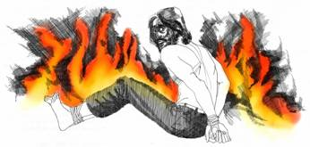

Hell — Eternal Torment or Annihilation? by Samuele Bacchiocchi
Few teachings have troubled the human conscience over the centuries more than the traditional view of hell as a place where the lost suffer conscious fiery punishment in body and soul for all eternity. The prospect that one day a vast number of people will be consigned to everlasting torment of Hell is most disturbing and distressing to sensitive Christians. After all, almost everyone has friends or family members who have died without making a commitment to Christ. The prospect of one day seeing them agonizing in Hell for all eternity can easily lead thinking people to say to God: "No thank you God. I am not interested in Your kind of paradise!"
It is not surprising that today we seldom hear "fire and brimstone" sermons on even from fundamentalist preachers, who theoretically are still committed to such a belief. Their reticence to preach on hellfire is most likely not due to a lack of integrity in proclaiming an unpopular truth, but to their aversion to preaching a doctrine that they find it hard to believe. Something instinctive inside tells them that the God who so loved the world to send His only begotten Son to save sinners, cannot also be a God who tortures people (even the worst of sinners) for time without end. This unacceptable paradox has inspired Bible scholars of all persuasions to reexamine the Biblical teachings regarding the final punishment.1
The fundamental question being addressed is: Do impenitent sinners suffer conscious punishment in body and soul for all eternity, or are they annihilated by God in the second death after suffering a temporary punishment? To put it differently: Does hellfire torment the lost eternally or consume them permanently?
The Metaphorical View of Hell
The responses to this fundamental question vary considerably. Two recent interpretations designed to make Hell more humane deserve brief mention. The first is the metaphorical interpretation of Hell as a place where the torment is everlasting, but the suffering is more mental than physical. The fire is not literal but metaphorical, and the pain is caused more by the sense of separation from God than by physical torments.2
Billy Graham, who has led tens of thousands to Christ, expresses a metaphorical view of hellfire when he says: "I have often wondered if hell is a terrible burning within our hearts for God, to fellowship with God, a fire that we can never quench."3 Graham's interpretation of hellfire as "a terrible burning within our hearts for God" is most ingenious. Unfortunately, it ignores that the"burning" takes place not within the heart, but without where the wicked are consumed. If the wicked had a burning within their hearts for God, they would not experience the suffering of the final punishment in the first place.
William Crockett concludes his defense of the metaphorical view of Hell saying: "Hell, then, should not be pictured as an inferno belching fire like Nebuchadnezzar's fiery furnace. The most we can say is that the rebellious will be cast from the presence of God, without any hope of restoration. Like Adam and Eve they will be driven away, but this time into 'eternal night,' where joy and hope are forever lost."4
The problem with this view of Hell is that it merely wants to replace the physical torment with a more endurable mental anguish. Some may question if eternal mental anguish is really more humane than physical torment. Even if that were true, the lowering of the pain quotient in a non-literal hell, does not substantially change the nature of hell since it still remains a place of unending torment.
The solution is to be found not in humanizing or sanitizing the traditionalist view of Hell so that it may ultimately prove to be a more tolerable place for the wicked to spend eternity, but in understanding the true nature of the final punishment which, as we shall see, is permanent annihilation and not eternal torment.
The Universalist View of Hell
A second and more radical revision of Hell has been attempted by universalists, who reduce Hell to a temporary condition of graded punishments which ultimately leads to heaven. Universalists believe that ultimately God will succeed in bringing every human being to salvation and eternal life so that no one, in fact, will be condemned in the final judgment to either eternal torment or annihilation.5
No one can deny that universalism appeals to the Christian conscience, because any person who has sensed God's love longs to see Him saving everyone and hates to think that He would be so vindictive as to punish millions of persons with eternal torments, especially those who have lived in ignorance. Yet, our appreciation for the universalists' concern to uphold the triumph of God's love and to justly refute the unbiblical concept of eternal suffering must not blind us to the fact that this doctrine is a serious distortion of Biblical teaching. Universal salvation cannot be right just because eternal suffering is wrong.
The universal scope of God's saving purpose must not be confused with the fact that those who reject His provision of salvation will perish. This truth is aptly expressed in the best-known text about God's love: "For God so loved the world that he gave his only Son, that whoever believes in him should not perish but have eternal life" (John 3:16). The destiny of those who refuse to believe is destruction ("perish") and not universal salvation.
While both the metaphorical and universalistic views of Hell represent well-meaning attempts "to take the hell out of Hell," they fail to do justice to the Biblical data and thus they ultimately misrepresent the Biblical doctrine of the final punishment of the unsaved. The sensible solution to the problems of the traditionalist view is to be found, not by lowering or eliminating the pain quotient of a literal Hell but, by accepting Hell for what it is, the final punishment and permanent annihilation of the wicked. As the Bible says: "The wicked will be no more" (Ps 37:10) because "their end is destruction" (Phil 3:19).
The Annihilation View of Hell
The belief in the final annihilation of the lost is based on four major Biblical considerations: (1) the punishment of sin is death, (2) the language of destruction of the wicked, (3) the moral implications of eternal torment, and (4) the cosmological implications of eternal torment.
The Punishment of Sin is Death
The final annihilation of impenitent sinners is indicated first of all by the fundamental principle laid down in both Testaments that the final punishment of sin is death: "The soul that sins shall die" (Ezek 18:4, 20); "The wages of sin is death" (Rom 6:23). The punishment of sin, of course, comprises not only the first death which all experience as a result of Adam's sin, but also what the Bible calls the second death (Rev 20:14; 21:8), which is the final, irreversible death experienced by impenitent sinners. This basic principle is fundamental for understanding the nature of the final punishment because it tells us at the outset that the ultimate wages of sin is not eternal torment, but permanent death.
Death in the Bible is the cessation of life. Were it not for the fact of the resurrection (1 Cor 15:18) the death that every human being experiences would be the termination of their existence. It is the resurrection that turns death from being the final end of life into being a temporary sleep. But there is no resurrection from the second death, because those who experience it are consumed in what the Bible calls "the lake of fire" (Rev 20:14). That will be the final annihilation.
This fundamental truth was taught in the Old Testament, especially through the sacrificial system. The penalty for the gravest sin was always and only the death of the substitute victim and never a prolonged torture or imprisonment of the victim. The consummation of the sin offering typified in a dramatic way the ultimate destruction of sin and sinners.
The final disposition of sin and the destruction of sinners was revealed especially through the ritual of the Day of Atonement, which typified the execution of God's final judgment upon believers and unbelievers. The penitent Israelites who had repented of their sins were pronounced "clean before the Lord" (Lev 16:30) at the completion of the purification rites. But the impenitent Israelites who sinned defiantly against God (cf. Lev 20:1-6) and did not repent, on the Day of Atonement they were "cut off" from God's people. "For whoever is not afflicted on this same day shall be cut off from his people. And whoever does any work on this same day, that person I will destroy from among his people" (Lev 23:29-30).
The separation that occurred on the Day of Atonement between penitent and impenitent Israelites typifies the separation that will occur at the Second Advent. Jesus compared this separation to the one that takes place at harvest time between the wheat and the tares. Evildoers will be thrown "into the furnace of fire," and the "righteous will shine like the sun in the kingdom of their Father" (Matt 13:42-43).
Jesus' parables and the ritual of the Day of Atonement teach the same important truth: False and genuine Christians will coexist until His coming. But at the final judgment a permanent separation occurs when sin and sinners will be eradicated forever and a new world will be established. As in the typical service of the Day of Atonement impenitent sinners were"cut off" and"destroyed," so in the antitypical fulfillment of the final judgment, sinners "shall suffer the punishment of eternal destruction" (2 Thess 1:9).
The Language of Destruction in the Bible
The second and most compelling reason for believing in the annihilation of the lost at the final judgment is the rich vocabulary and imagery of "destruction" often used in the Old and New Testaments to describe the fate of the wicked. The writers of the Old and New Testament seem to have exhausted the resources of the Hebrew and Greek languages at their command to affirm the complete destruction of impenitent sinners.
According to Basil Atkinson over 25 nouns and verbs are used in the Old Testament to describe the final destruction of the wicked.6 A detailed listing of all the occurrences would take us beyond the limited scope of this article. Only a sampling of significant texts are considered here. Several Psalms describe the final destruction of the wicked with dramatic imagery (Ps 1:3-6; 2:9-12; 11:1-7; 34:8-22; 58:6-10; 69:22-28; 145:17, 20). In Psalm 37, for example, we read that the wicked "will soon fade like grass" (v. 2),"they shall be cut off . . . and will be no more" (vv. 9-10), they will "perish . . . like smoke they vanish away" (v. 20),"transgressors shall be altogether destroyed" (v. 38). Psalm 1, loved and memorized by many, contrasts the way of the righteous with that of the wicked. Of the latter it says that "the wicked shall not stand in the judgment" (v. 5). They will be "like chaff which the wind drives away" (v. 4). "The way of the wicked will perish" (v. 6). Again, in Psalm 145, David affirms: "The Lord preserves all who love him; but all the wicked he will destroy" (v. 20). This sampling of references, on the final destruction of the wicked is in complete harmony with the teaching of the rest of Scripture.
The Destruction of the Day of the Lord.
The prophets frequently announce the ultimate destruction of the wicked in conjunction with the eschatological Day of the Lord. In his opening chapter, Isaiah proclaims that "rebels and sinners shall be destroyed together, and those who forsake the Lord shall be consumed" (Is 1:28). The picture of total destruction is further developed by the imagery of sinners burning like tinder with no one to quench the fire: "The strong shall become tow, and his work a spark, and both shall burn together, with none to quench them" (Is 1:31).
Similar descriptions can be found in Zephaniah (1:15, 15, 18) and Hosea (13:3). The latter compares the fate of the wicked with the morning mist, the early dew, the chaff, and the smoke (Hos 13:3), all of which suggests that sinners will finally disappear from God's creation.
The last page of the Old Testament offers us a most colorful description of the contrast between the final destiny of believers and unbelievers. For the believers who fear the Lord, "the sun of righteousness shall rise, with healing in his wings" (Mal 4:2). But for unbelievers the Day of the Lord "comes, burning like an oven, when all the arrogant and all the evildoers will be stubble; the day that comes shall burn them up, says the Lord of hosts, so that it will leave them neither root nor branch" (Mal 4:1).
The message conveyed by these symbolic images is clear. While the righteous rejoice in God's salvation, the wicked are consumed like"stubble," so that no "root or branch" is left. This is clearly a picture of total consumption by destroying fire, and not one of eternal torment.
Jesus and the Language of Destruction.
The New Testament follows closely the Old Testament in describing the fate of the wicked with words and pictures denoting total annihilation. Jesus compared the utter destruction of the wicked to such things as the weeds that are bound in bundles to be burned (Matt 13:30, 40), the bad fish that is thrown away (Matt 13:48), the harmful plants that are rooted up (Matt 15:13), the fruitless trees that are cut down (Luke 13:7), the withered branches that are burned (John 15:6), the unfaithful tenants who are destroyed (Luke 20:16), the evil servant who will be cut in pieces (Matt 24:51), the Galileans who perished (Luke 13:2-3), the eighteen persons who were crushed by Siloam's tower (Luke 13:4-5), the antediluvians who were destroyed by the flood (Luke 17:27), the people of Sodom and Gomorrah who were destroyed by fire (Luke 17:29), and the rebellious servants who were slain at the return of their master (Luke 19:14, 27).
All these illustrations employed by the Savior very graphically depict the ultimate destruction of the wicked. The contrast between the destiny of the saved and that of the lost is one of life versus destruction. Jesus said: "I give them eternal life, and they shall never perish" (John 10:28). "Enter by the narrow gate; for the gate is wide and the way is easy that leads to destruction, and those who enter it are many. For the gate is narrow and the way is hard that leads to life, and those who find it are few" (Matt 7:13-14). Within the context of these passages, there is no reason for twisting the word "perish" or "destruction" to mean everlasting torment.
Those who appeal to Christ's references to hellfire-gehenna (Matt 5:22, 29, 30; 18:8, 9; 23:15, 33; Mark 9:44, 46, 47, 48) to support their belief in eternal torment, fail to realize, as John Stott rightly points out, that "The fire itself is termed 'eternal' and 'unquenchable,' but it would be very odd if what is thrown into it proves indestructible. Our expectation would be the opposite: it would be consumed for ever, not tormented for ever. Hence it is the smoke (evidence that the fire has done its work) which 'rises for ever and ever' (Rev 14:11; cf. 19:3)."7
None of Christ's allusions to hell-gehenna indicates that hell is a place of unending torment. What is eternal or unquenchable is not the punishment but the fire which, as in the case of Sodom and Gomorra, causes the complete and permanent destruction of the wicked, a condition that lasts forever. The fire is unquenchable because it cannot be quenched until it has consumed all the combustible material.
"Eternal Punishment." Christ's solemn declaration: "They will go away into eternal punishment, but the righteous into eternal life" (Matt 25:46) is generally regarded as the clearest proof of the conscious suffering the lost will endure for all eternity. This interpretation ignores the difference between eternal punishment and eternal punishing. The term "eternal-aionios," which in Greek literally means "age-lasting," often refers to the permanence of the result rather than the continuation of a process. For example, Jude 7 says that Sodom and Gomorrah underwent "a punishment of eternal [aionios] fire." It is evident that the fire that destroyed the two cities is eternal, not because of its duration but because of its permanent results.
Another fitting example is found in 2 Thessalonians 1:9, where Paul, speaking of those who reject the Gospel, says: "They shall suffer the punishment of eternal destruction and exclusion from the presence of the Lord and from the glory of his might."36 It is evident that the destruction of the wicked cannot be eternal in its duration, because it is difficult to imagine an eternal, inconclusive process of destruction. Destruction presupposes annihilation. The destruction of the wicked is eternal, not because the process of destruction continues forever, but because the results are permanent. In the same way, the "eternal punishment" of Matthew 25:46 is eternal because its results are permanent. It is a punishment that results in their eternal destruction or annihilation.
The Second Death.
The language of destruction is present, especially in the book of Revelation, because it represents God's way of overcoming the opposition of evil to Himself and His people. John describes with vivid imagery the consignment of the devil, the beast, the false prophet, death, Hades, and all the wicked into the lake of fire, which he clearly defines as "the second death:" "Their lot shall be in the lake that burns with fire and sulfur, which is the second death" (Rev 21:8; cf. 20:14; 2:11; 20:6).
The phrase "second death" was frequently used by the Jews to describe the final, irreversible death. Numerous examples can be found in the Targum, which is the Aramaic translation and interpretation of the Old Testament. For example, the Targum on Isaiah 65:6 is very close to Revelation 20:14 and 21:8. It reads: "Their punishment shall be in Gehenna where the fire burns all the day. Behold, it is written before me: 'I will not give them respite during (their) life but will render them the punishment of their transgressions and will deliver their bodies to the second death."54 Again, the Targum on Isaiah 65:15 reads: "The Lord God will slay you with the second death but his servants, the righteous, he shall call by a different name."55 Here, the second death is explicitly equated with the slaying of the wicked by the Lord, a clear image of final destruction and not of eternal torment.
For the saved the resurrection marks the beginning of a second and higher life, but for the unsaved it marks the end of a second deeper death. As there is no more death for the redeemed (Rev 21:4), so there is nor more life for the lost (Rev 21:8). The "second death," is then the final, irreversible death. To interpret the phrase otherwise, as eternal conscious torment or separation from God means to negate the Biblical meaning of "death" as cessation of life.
The Moral Implications of Eternal Torment
A third reason for believing in the final annihilation of the lost is the unacceptable moral implications of the doctrine of eternal torment. The notion of a God who deliberately tortures sinners throughout the endless ages of eternity, is totally incompatible with the Biblical revelation of God as infinite love. A God who inflicts unending tortures upon His creatures, no matter how sinful they may have been, is far more like Satan than like the loving Father revealed to us by Jesus Christ.
Does God have two faces? He is boundlessly merciful on one side and insatiably cruel on the other? Can God love sinners so much as He sent His beloved Son to save them, and yet hate impenitent sinners so much that He subjects them to unending cruel torment? Can we legitimately praise God for His goodness, if He torments sinners throughout the ages of eternity?
Would we want to be like God in His merciless treatment of the lost? One wonders if such a view of God may not have inspired the Inquisition to imprison, torture, and eventually burn at the stake so-called "heretics" who refused to accept the traditional teachings of the church. If God is merciless in punishing sinners with unending torments in the world to come, why shouldn't the church act likewise in this present world by torturing and burning "heretics"?
The moral intuition God has implanted within our consciences cannot justify the insatiable cruelty of a deity who subjects sinners to unending torment. Divine justice could never demand for finite sins the infinite penalty of eternal pain, because unending torment does not serve any reformative purpose precisely because it never ends.
Furthermore, eternal, conscious torment is contrary to the Biblical vision of justice because such a punishment would create a serious disproportion between the sins committed during a lifetime and the resulting punishment lasting for all eternity. As John Stott perceptive asks, "Would there not, then, be a serious disproportion between sins consciously committed in time and torment consciously experienced throughout eternity? I do not minimize the gravity of sin as rebellion against God our Creator, but I question whether 'eternal conscious torment' is compatible with the Biblical revelation of divine justice."10
Ultimately, any doctrine of Hell must pass the moral test of the human conscience, and the doctrine of literal unending torment cannot pass such a test. Annihilationism, on the other hand, can pass the test because it recognizes that God's final punishment of the wicked is not vindictive, requiring everlasting torment, but rational, resulting in their permanent annihilation.
The Cosmological Implications of Eternal Torment
A fourth and final reason for believing in the annihilation of the lost is the fact that eternal torment presupposes an eternal cosmic dualism. Heaven and hell, happiness and pain, good and evil would continue to exist forever alongside each other. It is impossible to reconcile this view with the prophetic vision of the new world in which there shall be no more "mourning nor crying nor pain any more, for the former things have passed away" (Rev 21:4). How could crying and pain be forgotten if the agony and anguish of the lost were at sight distance, as in the parable of the Rich Man and Lazarus (Luke 16:19-31)?
The presence of countless millions forever suffering excruciating torment, even if it were far away from the camp of the saved, could only serve to destroy the peace and happiness of the new world. The new creation would turn out to be flawed from day one, since sinners would remain an eternal reality in God's universe and God would never be "everything to every one" (1 Cor 15:28).
The purpose of the plan of salvation is ultimately to eradicate the presence of sin and sinners from this world. It is only if sinners, Satan, and the devils ultimately are consumed in the lake of fire and experience the extinction of the second death that we truly can say that Christ's redemptive mission has been an unqualified victory. Everlasting torment would cast a permanent shadow of darkness over the new creation.
In summation, our age desperately needs to learn the fear of God, and this is one reason for preaching on the final judgment and punishment. We need to warn people that those who reject Christ's principles of life and the provision of salvation ultimately will experience a fearful judgment and "suffer the punishment of eternal destruction" (2 Thess 1:9). We need to boldly proclaim the great alternatives of the Gospel between eternal life and permanent destruction. The recovery of the Biblical view of the final judgment can loosen the preachers' tongues, because they can preach this vital doctrine which mankind desperately need to hear without fear of portraying God as a monster.
NOTES
1. For a survey of recent research by leading scholars on the nature of Hell, see Samuele Bacchiocchi, Immortality or Resurrection? A Biblical Study on Human Nature and Destiny (Berrien Springs, Michigan 1997), pp. 193-248.
2. For a concise but compelling presentation of the metaphorical view of hell, see William V. Crockett, "The Metaphorical View," in Four Views of Hell, ed. William Crockett (Grand Rapids, 1992), pp. 43-81.
3. Billy Graham, "There is a Real Hell," Decision 25 (July-August 1984), p. 2. Elsewhere Graham asks: "Could it be that the fire Jesus talked about is an eternal search for God that is never quenched? That, indeed, would be hell. To be away from God forever, separated from His Presence" (in The Challenge: Sermons from Madison Square Garden [Garden City, New York, 1969], p. 75).
4. William V. Crockett (note 2), p. 61.
5. This belief was first suggested by Origen in the third century, and it has gained steady support in modern times, especially through the writing of such men as Friedrich Schleiermacher, C. F. D. Moule, J. A. T. Robinson, Michael Paternoster, Michael Perry, and John Hick. The arguments presented by these and other writers in support of universalism are both theological and philosophical. For an analysis, see Immortality or Resurrection? A Biblical Study on Human Nature and Destiny, pp. 220-223.
6. Basil F. C. Atkinson, Life and Immortality. An Examination of the Nature and Meaning of Life and Death as They Are Revealed in the Scriptures (Taunton, England, n. d.), pp. 85-86.
7. John Stott and David L. Edwards, Essentials: A Liberal-Evangelical Dialogue (London, 1988), p. 316.
8. M. McNamara, The New Testament and the Palestinian Targum to the Pentateuch ( New York, 1958), p. 123.
9. Ibid.
10. John Stott (note 7), pp. 318-319
|